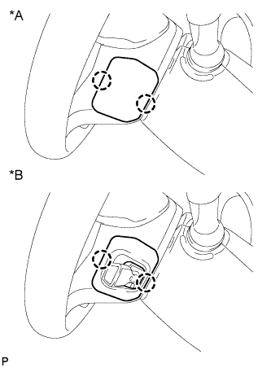
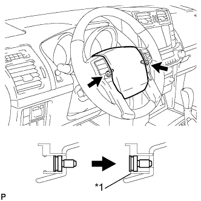
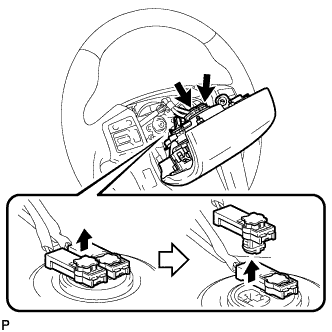
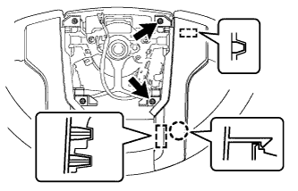
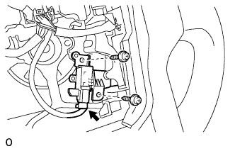
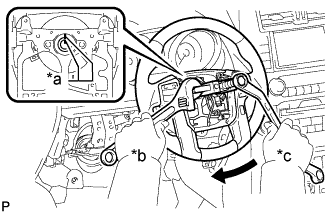

РУЛЕВОЕ КОЛЕСО > СНЯТИЕ |
| 1. РАСПОЛОЖИТЕ ПЕРЕДНИЕ КОЛЕСА СТРОГО ПРЯМО |
| 2. ОТСОЕДИНИТЕ ПРОВОД ОТ ОТРИЦАТЕЛЬНОГО ВЫВОДА АККУМУЛЯТОРНОЙ БАТАРЕИ |
| 3. СНИМИТЕ НИЖНЮЮ КРЫШКУ РУЛЕВОГО КОЛЕСА № 3 |
 |
Отцепите 2 захвата и снимите обивку.
| 4. СНИМИТЕ НИЖНЮЮ КРЫШКУ РУЛЕВОГО КОЛЕСА № 2 |
|  |
Отцепите 2 захвата и снимите накладку.
| *A | Для моделей без системы круиз-контроля |
| *B | Для моделей с системой круиз-контроля |
| 5. СНИМИТЕ НАКЛАДКУ РУЛЕВОГО КОЛЕСА |
|  |
С помощью торцевого ключа "TORX" T30 ослабьте затяжку 2 винтов так, чтобы канавка вдоль окружности винта вошла в корпус с резьбой.
| *1 | Корпус с резьбой |
|  |
Вытяните накладку рулевого колеса из рулевого колеса, как показано на рисунке. Одной рукой придерживайте накладку рулевого колеса.
Отсоедините разъем звукового сигнала.
Отсоедините 2 разъема и снимите накладку рулевого колеса.
| 6. СНИМИТЕ ДЕКОРАТИВНЫЙ ЭЛЕМЕНТ РУЛЕВОГО КОЛЕСА № 1 |
|  |
Выверните 2 болта.
Освободите захват и снимите декоративный элемент.
| 7. СНИМИТЕ ДЕКОРАТИВНЫЙ ЭЛЕМЕНТ РУЛЕВОГО КОЛЕСА № 2 |
Выверните 2 болта.
Освободите захват и снимите декоративный элемент.
| 8. СНИМИТЕ ПЕРЕКЛЮЧАТЕЛИ НА РУЛЕВОМ КОЛЕСЕ (для моделей с переключателями на рулевом колесе) |
Отсоедините разъем.
Выверните 4 болта.
Освободите захват и снимите переключатель на рулевом колесе в сборе.
| 9. СНИМИТЕ ПРАВЫЙ ПЕРЕКЛЮЧАТЕЛЬ НА РУЛЕВОМ КОЛЕСЕ (для моделей с переключателями на рулевом колесе) |
Отсоедините разъем.
Выверните 2 болта.
Освободите захват и снимите правый переключатель на рулевом колесе.
| 10. СНИМИТЕ ГЛАВНЫЙ ВЫКЛЮЧАТЕЛЬ СИСТЕМЫ КРУИЗ-КОНТРОЛЯ (для моделей с системой круиз-контроля) |
|  |
Отсоедините разъем.
Выверните 2 винта и снимите переключатель.
| 11. СНИМИТЕ РУЛЕВОЕ КОЛЕСО В СБОРЕ |
Отверните установочную гайку рулевого колеса.
|  |
Нанесите сборочные метки на рулевое колесо и вторичный вал.
| *a | Метка |
| *b | Удерживайте |
| *c | Поверните |
С помощью SST снимите рулевое колесо в сборе.